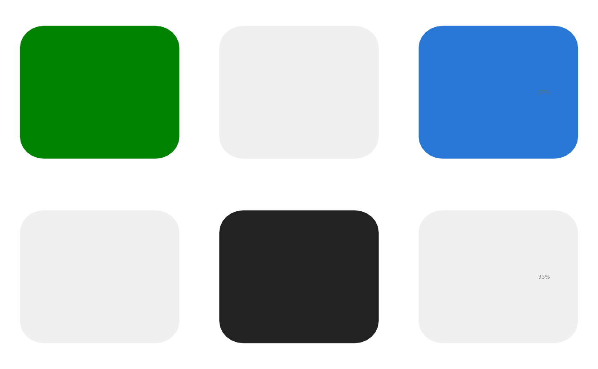

Tiles in a row-by-column grid, coloured by a category (for example the alteration class of a gene in a tumour, or a clinical annotation of a patient); missing combinations are drawn in a light grey. Tiles can have rounded corners; a value per row (for example the share of altered tumours) can be printed right of the matrix, and row labels can be set in italics (gene symbols).
Usage
PlotAlterationMatrix(
data,
row = "row",
column = "column",
value = "value",
fill_column = NULL,
rows = NULL,
columns = NULL,
row_order_by = NULL,
column_order_by = NULL,
row_labels = NULL,
column_labels = NULL,
colours = NULL,
missing_colour = "#F0F0F0",
tile_width = 0.8,
tile_height = 0.72,
radius = 0.12,
row_size = 5.3,
row_pad = 3.5,
row_italic = FALSE,
show_rows = TRUE,
show_columns = FALSE,
column_angle = 55,
column_size = 5,
column_pad = 3.5,
column_colours = NULL,
right_text = NULL,
right_format = "%.0f%%",
right_size = 4.6,
right_colour = "muted",
right_offset = 0.2,
legends = NULL,
texts = NULL,
values = NULL,
style = ManuscriptStyle()
)Arguments
- data
Long data: one row per matrix cell.
- row, column
Columns with the row and column keys.
- value
Column with the category of each tile.
- fill_column
Optional column with explicit tile colours (overrides
colours).- rows, columns
Row order (top to bottom) and column order (left to right): character vectors or data frames (ordered by a
rankcolumn if present); default first appearance.- row_order_by, column_order_by
Optional numeric columns of
datagiving the row or column order.- row_labels, column_labels
Display labels: named mapping or vector.
- colours
Named colours per category.
- missing_colour
Colour of missing cells.
- tile_width, tile_height
Tile size in column and row units.
- radius
Corner radius in data units (0 for square tiles).
- row_size, row_pad, row_italic
Row label size, distance and italics.
- show_rows, show_columns
Draw row or column labels.
- column_angle, column_size, column_pad
Column label rotation (degrees), size and distance from the matrix (points).
- column_colours
Named text colours of column labels.
- right_text
Optional column with one numeric value per row, printed right of the matrix with
right_format.- right_format, right_size, right_colour, right_offset
Format, size, colour and position (column units beyond the last column centre).
- legends
Optional list of legends, each as the
legendofPlotEmbedding()(shape"rect"gives patches); colours default tocolours.- texts
Optional texts at panel fractions (list of
label,xy,size,colour,bold,hjust,vjust,angle); labels may useFormatTemplate()placeholders filled fromvalues.- values
Optional data frame for text templates.
- style
A
ManuscriptStyle()object.
Examples
d <- data.frame(row = rep(c("g1", "g2"), each = 3), column = rep(c("s1", "s2", "s3"), 2),
value = c("Missense", NA, "Deletion", NA, "Truncating", NA),
share = rep(c(67, 33), each = 3))
PlotAlterationMatrix(d, colours = c(Missense = "#008300", Truncating = "#222222",
Deletion = "#2a78d6"), right_text = "share",
row_italic = TRUE)
